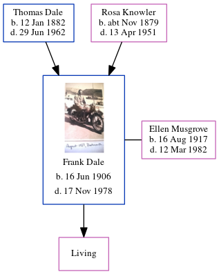

Ellen Florence Dale (née Musgrove) 1917 - 1982
[ Home ] | [ Calendar ] | [ Surnames Index ] | [ Errors ] | [ Family History ]Ellen Musgrove, the wife of Frank Aubrey George Dale (the third cousin twice-removed on the father's side of Nigel Horne), was born in Poplar, London, England on 16 Aug 19171,2 and. She went to Avery Hill College, Avery Hill, Kent, England She married Frank (with whom she had 1 surviving child, ) in Sheppey, Kent, England on 2 Jun 19414.
She died on 12 Mar 1982 in Fazakerley, Lancashire, England2,3 (aspiratial Pneumonia; Carcinoma Oesophagus; Breast Carcinoma R.Side).
Citations
- England & Wales births 1837-2006 - Findmypast
- England & Wales deaths 1837-2007 - Findmypast
- http://search.ancestry.co.uk/cgi-bin/sse.dll?db=onsdeath93&h=50463174&ti=5538&indiv=try&gss=pt
- England & Wales Marriages 1837-2005 - Findmypast
Media
Ellen Florence Musgrove

England & Wales deaths 1837-2007 - BMD/D/1982/1/AZ/000257/032
England & Wales marriages 1837-2008 - BMD/M/1941/2/AZ/001058/004
England & Wales births 1837-2006 - BMD/B/1917/3/AZ/000835/062
Family Tree
Map
Generated by ged2site. Last updated on Jul 3, 2024
Known Issues
No records of living with anyone
1939 UK register information missing